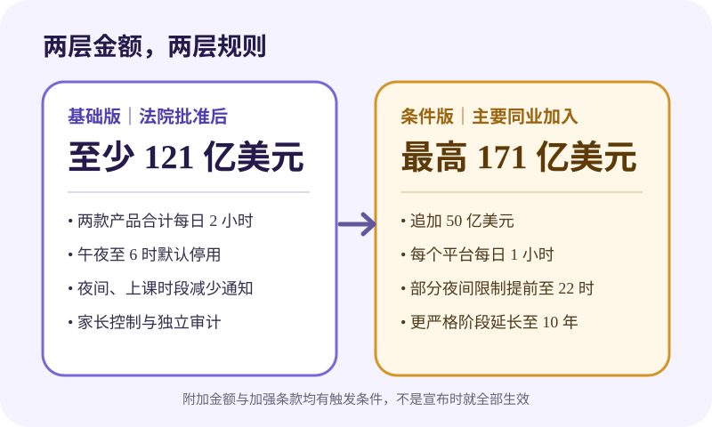
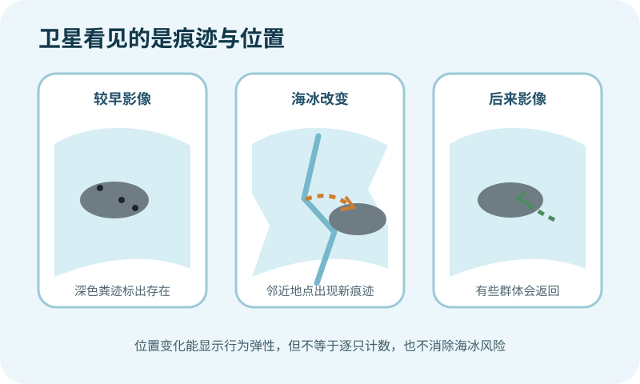
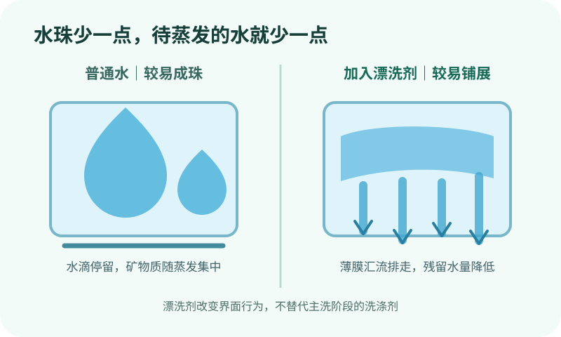
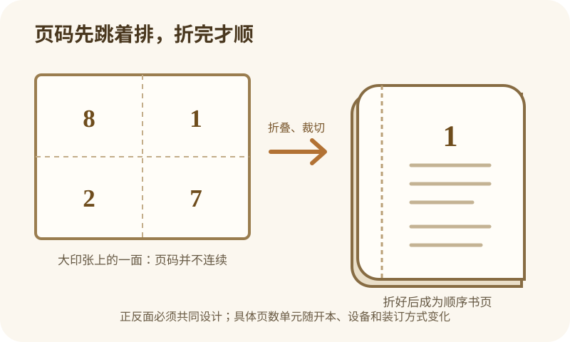
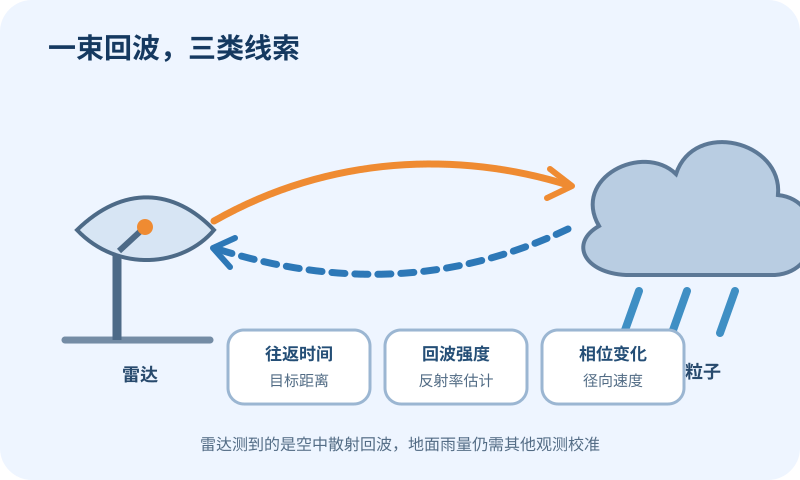

今日热点 01 · 科技 / 青少年保护
Meta同意最高支付171亿美元，青少年保护条款先看基础版与条件版
美国多州总检察长与Meta于8月26日宣布和解，尚待法院批准。Meta至少支付121亿美元；若YouTube和TikTok等主要平台在规定期限内接受相近条款，总额可升至171亿美元。金钱之外，协议把青少年每日时长、夜间使用、通知和家长控制写进可审计的产品规则。

121亿美元与171亿美元对应不同条件；保护措施也分为立即适用的基础版和同业触发后的加强版。原创示意。
金额先拆开
121亿美元是基础额，另外50亿美元取决于其他平台
和解覆盖美国多州及地区对Meta的相关主张，付款期为十年。协议规定基础金额至少121亿美元；若YouTube、TikTok等主要平台在限定条件下达成可比和解，Meta再支付50亿美元，因此官方给出的最高数是171亿美元。美联社标题采用四舍五入后的“近180亿美元”。
这不是已经到账的一次性罚款。协议仍须法院批准，附加金额也不是必然发生。看到“171亿”时，最好同时问三个问题：基础额是多少、触发条件是什么、执行期多长。
产品会怎样改
未满18岁账户默认每天两小时，夜间停用并减少通知
基础条款要求Meta对未满18岁用户实施年龄识别与默认保护。Facebook和Instagram合计每日使用达到两小时后，除消息功能外暂停；午夜至早上6时默认不能使用，夜间与上课时段不发送通知，连续使用15分钟还会出现提醒。
青少年可以看到非算法排序的信息流，点赞和反应等公开计数也受到限制。家长能够查看部分使用信息并调整限制，但取消核心保护需要家长许可。规则针对的是美国青少年账户，不应外推为全球产品已经同步改变。
条件版更严格
同业若加入，时长上限会按平台计算，保护期也会延长
若主要竞争平台接受相近约束，Meta的加强版条款才会启动：每日时长由两款产品合计两小时，收紧为每个平台一小时；部分夜间限制从午夜提前到晚上10时，并把更严格阶段延长至十年。
这种设计把一部分付款和产品责任绑在行业共同规则上。它可以减少一家平台单独收紧后用户转移的激励，却也让最终保护强度依赖尚未发生的其他和解。基础版与条件版必须分开评估。
执行看什么
独立审计和年龄识别，决定条款能否从纸面落到账号
协议要求独立审计，并把年龄识别、默认设置和家长控制纳入检查。执行难点不只在界面有没有开关，还在平台能否识别青少年账户、跨产品累计时长，并让绕过限制的路径足够困难。
Meta主张青少年保护应成为行业共同标准。和解解决的是州政府这一组案件，不会自动终止个人、学区或其他原告的诉讼。下一步要看法院批准、审计口径以及竞争平台是否触发加强条款。
Meta至少支付121亿美元，171亿美元是同业满足条件后的上限；基础保护包括每日两小时、夜间停用、通知限制和家长控制，协议仍待法院批准。
查看事实与延伸来源
纽约州总检察长办公室：金额、法院批准与青少年保护条款
美联社：十年付款、附条件金额、独立审计与其他诉讼
Meta公开信：时长、夜间、通知和家长控制的实施表述
今日热点 02 · 公共安全 / 医疗机构
伊斯兰堡医院育婴室火灾致14名新生儿死亡，起火原因仍待调查
巴基斯坦伊斯兰堡PIMS医院8月26日发生育婴室火灾，14名新生儿死亡，另有1名婴儿获救。火势被限制在相关区域。短路和空调压缩机故障都是初步说法，政府调查委员会尚未给出结论。
已经确认的范围
育婴室内15名新生儿中有14人死亡，1人被救出
美联社依据医院和政府信息报道，火灾发生在医院妇产部门的育婴室，15名新生儿中14人死亡，1人被救出。救援人员将火势控制在育婴室所在区域，医院其他部分没有被同一场火吞没。
死亡数字清楚，不代表事故链已经清楚。此时应把人员后果、现场范围和原因判断分开记录，避免用一条未经调查的设备故障说法替代全部事实。
原因尚未定案
“短路”与“空调压缩机”都只是初步信息
巴基斯坦广播电台援引官员称，初步报告指向短路；当地媒体援引现场消息称，空调压缩机可能发生故障。两种描述可能有关联，也可能来自不同阶段的判断，目前没有正式调查报告把因果链固定下来。
在设备检查、供电记录、报警时间和证人证词完成交叉核对前，把其中一种写成确定原因会过早。定稿只保留“起因待查”，并把初步说法放在限定语之后。
调查查什么
委员会要复盘发现、报警、转移和消防设施整条链
政府成立高级别委员会，任务包括重建起火时间线、评估应急响应、检查高风险新生儿转移程序、核查消防设施与合规情况，并确定可能的责任。计划在48小时内提交初步意见，五天内完成报告。
这样的调查范围说明，医院火灾不能只归结为某个零件。即使最终找到点火源，烟火发现是否及时、报警是否有效、人员是否受训、转移路径能否执行，都会影响伤亡结果。
行政处理的边界
暂停官员职务是调查措施，不等于责任已经认定
事件后，医院卫生部门负责人被暂停职务。行政上先隔离管理职责，有助于保存记录和开展调查；它本身不是司法结论，也不能证明某个人已经造成火灾。
后续值得核对的是委员会是否按期公开报告、证据能否支持起因判断、整改是否覆盖报警与转移流程。若只公布单一设备故障而不回答系统环节，公众仍无法判断类似风险是否下降。
PIMS医院火灾造成14名新生儿死亡、1人获救；短路和空调压缩机均属初步说法，正式调查还要检查起因、响应、转移程序和消防设施。
查看事实与延伸来源
美联社：死亡人数、获救人数、火势范围与调查进展
巴基斯坦广播电台：调查委员会权限、48小时初步意见和五天报告
巴基斯坦广播电台：官员所述短路初步信息
Geo News：空调压缩机说法与现场报道
今日热点 03 · 科学 / 气候生态
卫星把帝企鹅殖民地历史往前推，也记录下它们为海冰搬家
NASA地球观测站8月26日汇总两项2026年研究：Landsat档案显示，18个帝企鹅殖民地在首次被正式识别前平均已存在约17年；另一些殖民地会在海冰条件恶化时迁往附近地点。行为有弹性，但不能消除长期海冰下降带来的繁殖风险。

卫星识别的是海冰上的殖民地痕迹与位置变化，不是逐只企鹅计数。原创示意，距离未按比例。
卫星看见什么
研究者追踪海冰上的粪迹，不是从太空逐只数企鹅
帝企鹅在南极冬季聚集繁殖，深色粪迹会在浅色海冰上形成可辨认斑块。研究者用Landsat长期影像寻找这些痕迹，从而确认殖民地在某年是否出现、位于何处。
这种方法能补上人类难以抵达地区的时间线，却不能直接给出精确个体数。云层、影像分辨率、积雪覆盖和殖民地规模都会影响识别，读图结论应保持在“存在与位置”这一层。
历史被往前推
18个殖民地比最初识别时间平均早约17年
研究团队回看更早的Landsat档案，在18个殖民地找到此前未被记录的痕迹，平均把已知存在时间向前推约17年。斯迈利岛殖民地至少可追溯到1989年；研究者估计它在部分年份容纳约6000只成鸟。
这会改变对殖民地“新出现”或“突然扩张”的理解。卫星首次识别只是观测史的起点，不一定是企鹅开始使用该地点的年份。长期档案的价值，正是把发现时间与存在时间拆开。
它们会换地方
三个案例显示，附近海冰变化会推动临时迁移或返回
另一项研究追踪斯迈利岛、默茨冰川和SANAE附近殖民地的位置变化。SANAE殖民地2011年曾移动约11公里，到2022年又返回先前区域；其他地点也出现绕开破碎海冰或改用邻近稳定区域的记录。
迁移不是随意漫游。繁殖期需要能维持到幼鸟离巢的稳定海冰，还要兼顾下海觅食距离和陆地、冰山障碍。卫星把这些取舍留下的地理轨迹连成了多年记录。
弹性不等于安全
能搬家可以缓冲局部失败，无法补回区域性海冰长期减少
斯迈利岛在2022年前后可能经历整季繁殖失败，2025年影像仍能在附近冰山旁看到殖民地痕迹。这说明部分群体会在局部条件改变后重新选址，不代表每次都能找到可用海冰。
更大尺度的海冰下降会同时减少备选地点，并提高繁殖季中途破冰的概率。评估帝企鹅前景时，既要把迁移能力纳入模型，也要保留它的上限：行为调整可以争取时间，不能制造海冰。
Landsat通过海冰粪迹追踪帝企鹅殖民地的存在与位置：18处记录平均向前延伸约17年，也看见迁移和返回；这说明行为有弹性，但不是海冰下降的解药。
查看事实与延伸来源
NASA地球观测站：两项2026年研究、历史记录与迁移案例
Remote Sensing in Ecology and Conservation：殖民地历史档案研究
Antarctic Science：殖民地迁移与返回研究
Communications Earth & Environment：2022年繁殖失败与海冰背景
涉猎 01 · 家务 / 界面化学
洗碗机里的漂洗剂不负责洗油，它负责让水别挂在碗上
漂洗剂在最后一次漂洗时释放，表面活性剂降低水的表面张力，让水更容易铺成薄层并从餐具表面排走。留下的水滴更少，烘干所需的蒸发量和矿物水斑也会减少。

漂洗剂降低表面张力，让水从“成珠停留”转向“铺展排走”。原创示意。
先分工
洗涤剂松动污垢，漂洗剂改变最后一层水的形状
主洗阶段的洗涤剂负责润湿、乳化和带走食物残渣与油脂。漂洗剂通常装在独立分配器中，到最后漂洗阶段才释放；它不承担重新清洗餐具的任务。
其关键成分是表面活性剂。分子一端亲水、一端较疏水，聚集在水与空气或餐具的界面，降低水维持球状表面的倾向。于是水不容易停成一颗颗圆珠。
为什么干得快
薄水膜更容易流走，机器需要蒸发的水变少
没有漂洗剂时，水滴可能挂在玻璃、陶瓷和塑料凹槽上。表面张力降低后，水更容易铺展、汇流并排下，留在餐具上的总水量随之减少。
烘干阶段面对的是更薄、更分散的水膜，较大的水珠已经减少。漂洗剂没有给水加热；干得更快，来自排水形态改变后，需要靠热量和空气带走的水更少。
水斑从哪来
水珠原地蒸发，会把矿物质集中留在边缘
自来水中的钙、镁等溶解物不会随水蒸气离开。一滴水停在玻璃上慢慢蒸发，矿物质会集中并形成白点或环状痕迹；水能先排走，留在原处的矿物质也更少。
漂洗剂不能清除已经形成的厚水垢，也不能替代软化水或正确投放洗涤剂。若餐具仍有斑点，应同时核对当地水硬度、分配器档位、喷臂通畅和摆放是否积水。
漂洗剂在最后漂洗时降低表面张力，让水铺展并排走，因而减少待蒸发的水和矿物水斑；它不替代洗涤剂，也不能清除既有水垢。
查看事实与延伸来源
美国清洁协会：洗碗机洗涤、漂洗与干燥流程
英国皇家化学学会：表面活性剂与水表面张力实验资料
Whirlpool产品帮助：漂洗剂在最后漂洗释放及独立分配器
Bosch家电：漂洗剂对水斑和干燥的作用
涉猎 02 · 印刷 / 装帧
一本书的页码为什么跳着印：大纸折起来后才回到顺序
传统书籍不是把第1页到第16页依次印在一条长纸上。印刷厂先按折叠和裁切方向，把多个页码拼在一张大纸的正反面；折好后，页码才依次排列，形成可缝订或胶订的书帖。

拼版时页码看似跳跃，折叠、裁切后才按阅读顺序排列。原创示意，仅示原理。
一张纸不等于两页
大印张可以同时承载许多书页的正反面
书籍印刷中的“页”是最终阅读单位；一片纸张裁开前的正反两面，可以排下多个页面。每一片最终书叶有正反两个页码，因此印刷厂必须同时考虑翻面、折叠和裁切后的方向。
这套安排叫拼版。大纸上相邻的页码常常相隔很远，例如开头页可能靠近这一书帖的末页。印完直接看会觉得乱，按设计折叠后，它们才落到正确前后关系。
书帖怎样形成
反复折叠把大纸变成一叠嵌套书叶
印张沿既定方向折一次、两次或更多次，会形成一组套在一起的书叶。装订术语把这种折成的单元称为书帖或帖；传统缝订会沿书帖中折线穿线，再把多帖连成书芯。
早期印本常用字母、数字或符号标记书帖，装订者据此检查顺序。文献学家今天仍会记录这些签名标记，用来描述一本书由哪些印张、按什么结构组合。
空白页未必出错
正文填不满最后一个生产单元时，余位可能保留为空白
若版面内容没有刚好占满最后一个书帖，余下页面可以留白，也可以放版权、广告、笔记页或出版社信息。空白因此可能来自生产结构和编辑选择，并不自动表示漏印。
页数必须是16或32的倍数并非普遍定律。开本、纸张尺寸、印刷设备、缝订或无线胶订方式都会改变最经济的单元；数字印刷还可以采用更小的组合。判断一本具体的书，要看它实际怎样印和装。
书页先以拼版方式跳着排在大印张两面，折叠、裁切后才恢复阅读顺序并组成书帖；空白页可能来自单元余位，但现代书并不都服从固定的16或32页倍数。
查看事实与延伸来源
康奈尔大学图书保存教程：leaf、sheet、signature等术语
Folger Shakespeare Library：书帖签名与书籍结构说明
美国国会图书馆保存术语表：印张、书帖与装订定义
LEMDO文献学教程：签名标记、折叠与页序
涉猎 03 · 气象 / 遥感
天气雷达怎么知道雨在多远：发一束脉冲，再给回声计时
天气雷达发出短促微波脉冲，随后监听雨滴、雪粒或冰雹散射回来的能量。往返时间给出目标距离，回波强度用于估计降水，连续脉冲之间的相位变化则给出目标朝向或远离雷达的径向速度。

同一组回波包含三类线索：往返时间、强度和相位变化。原创示意。
距离来自钟表
脉冲走一个来回，时间乘光速再除以二
雷达天线发出持续很短的微波脉冲，然后切换到接收状态。电磁波以接近光速传播；从发射到收到回声的时间包含去程和回程，所以距离等于时间乘传播速度后再除以二。
天线逐个方位旋转，并在不同仰角重复扫描，就能把许多距离点拼成三维体积。屏幕上的彩色平面图，通常是对这些扫描层做选择、投影或算法处理后的产品。
强度不是雨量杯
回波越强通常粒子越多或越大，雨量仍需算法换算
反射回雷达的能量称为反射率。较多、较大的水滴通常产生更强回波，冰雹也会很强；雷达据此估计降水位置和强度，但它测到的不是地面雨量本身。
粒子是雨、雪还是冰雹，会改变回波与实际水量的关系。双偏振雷达再比较水平和垂直方向的散射特征，帮助识别粒子形状与类型，降水算法仍需地面雨量站校准。
速度只看一条轴
多普勒信息测的是朝向或远离雷达的分量
移动粒子会使连续回波的相位发生规律变化。雷达由此求出径向速度：负值或正值分别代表目标沿雷达视线接近或远离，具体颜色约定随产品而异。
若风正好横穿雷达视线，径向速度可能接近零，即使真实风速并不小。气象员要结合多个方位、不同高度和邻近雷达，才能推断旋转、辐合或风暴整体运动。
盲区与误差
距离越远，波束通常越高，也更容易错过近地面天气
受地球曲率和天线仰角影响，雷达波束离站越远通常越高；山体和建筑会遮挡，近地杂波、异常传播和融化层也可能制造误判。云中有强回波，不保证雨滴一定落到地面。
因此雷达图适合观察结构和移动，不是单独的地面真相。预报员会把它与雨量站、卫星、闪电资料和现场报告交叉使用；公众读图时也应留意产品时间、站点距离与图例。
天气雷达用回波往返时间测距离、用反射率估计降水、用相位变化测径向速度；地形遮挡、波束高度和粒子类型都会带来误差。
查看事实与延伸来源
NOAA国家环境信息中心：NEXRAD反射率、径向速度与双偏振产品
英国气象局：雷达距离、反射率、波束高度与误差说明
美国国家气象局：雷达图判读、波束高度和径向速度限制
“如果人人都是天使，就不需要政府了。”
詹姆斯·麦迪逊《联邦党人文集第51篇》（1788） · 本刊译
麦迪逊讨论怎样让政府既能约束社会，又能约束自身。他先承认权力机构由普通人组成，再用分权和相互制衡降低滥用风险。这句话常被读成人性悲观，其实重点在制度设计：不能把公共安全寄托在执政者永远克制，也不能因为需要监督就否定政府的必要。可靠的制度要同时容纳能力与不信任。本句为本刊译。
核对原文与语境
“能顺木之天，以致其性焉尔。”
柳宗元《种树郭橐驼传》（唐代）
郭橐驼把种树诀窍说得很朴素：顺着树木自身的生长条件，使它的本性能够充分展开。文章随后把频繁探视、反复摇根的“勤政”写成伤害，并借种树讽谏扰民。顺其自然并非撒手不管；栽植时要根舒土平，完成必要工作后再克制干预。好的照料既包括行动，也包括知道何时停手，还要承认对象有自己的节律。
核对原文与语境
“它发生过，所以也可能再次发生：这就是我们要说的核心。”
普里莫·莱维《被淹没和被拯救的》（1986） · 本刊译
莱维在晚年作品中回望纳粹集中营，也追问记忆怎样被简化、扭曲或主动压下。警告的力量不在预言某种历史会原样重演，而在拒绝把暴行封存在不可复制的过去。制度退化、服从训练和语言麻木可以用新形式组合。纪念若只剩仪式，便失去识别当下早期征兆的用途，也无法提醒后来者在尚能选择时行动。本句为本刊译。
核对原文与语境
“反馈回路传来的信息只能影响未来行为，无法回头纠正造成当前反馈的行为。”
多内拉·梅多斯《系统之美》（2008） · 本刊译
反馈总有延迟：恒温器读到温度变化时，加热或散热已经发生；机构看到季度指标时，造成结果的决定往往早已执行。忽略延迟，人们会因眼前没有反应而加码，等信号到来又过度反向调整。梅多斯提醒我们把信息回路当成面向未来的控制，而不是抹掉过去的橡皮。设计系统时，反应速度与观察窗口必须匹配。本句为本刊译。
核对原文与语境
“故事是一个人对另一个人说：我感受到的是这样。你明白我在说什么吗？你也有这样的感受吗？”
石黑一雄《诺贝尔文学奖演讲》（2017） · 本刊译
石黑一雄在演讲中把故事的核心放在感受的传递，情节技巧和观点都服务于这次沟通。讲述者不能保证对方同意，只能尽量准确地呈现一种经验，再发出理解的邀请。这个定义也给阅读保留了距离：共情不必把他人的处境据为己有；差异仍然存在时，某种感受也可以被听见。公共讨论缺少的常是这一步。本句为本刊译。
核对原文与语境